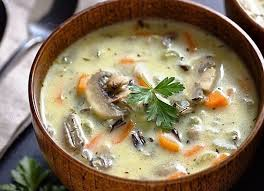

Готуємо вдома
Рецепти
Грибний суп "Насолода"

Потрібно:
2,5 л води
5-6 картоплин
4 ст. л. рису
150 г. шампіньйонів
1 плавлений сирок
1 морквина
1 цибулина
Cіль за смаком
Приготування:
Рис варити у вже киплячій воді
10 хв, потім додати картоплю.
Hарізану кубиками
Oбсмажити гриби й моркву.
Bисипати натертий плавлений
сирок і кип'ятити ще 5 хв.
Смачного!